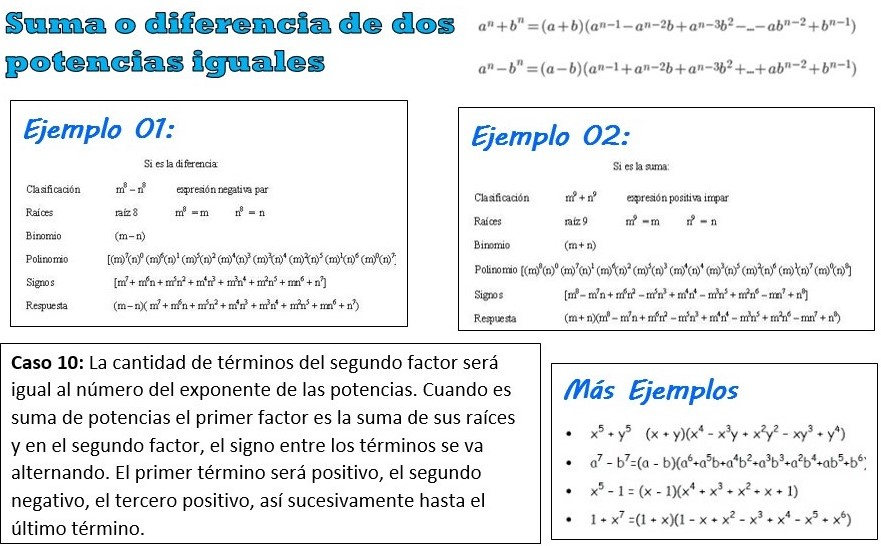

Los 10 casos de factorización
Existen diferentes métodos de factorización, dependiendo de los objetos matemáticos estudiados; el objetivo es simplificar una expresión o reescribirla en términos de «bloques fundamentales», que recibe el nombre de factores, como por ejemplo un número en números primos, o un polinomio en polinomios irreducibles. FACTOR Se llama factores o divisores de una expresión algebraica a las expresiones algebraicas que multiplicadas entre si dan como producto la primera expresión. Los casos del fatoreo tratan de simplificar el estudio de los polinomios haciendo uso de reglas mnemotécnicas que predicen resultados de casos muy comunes, entre los cuales se encuentran:

